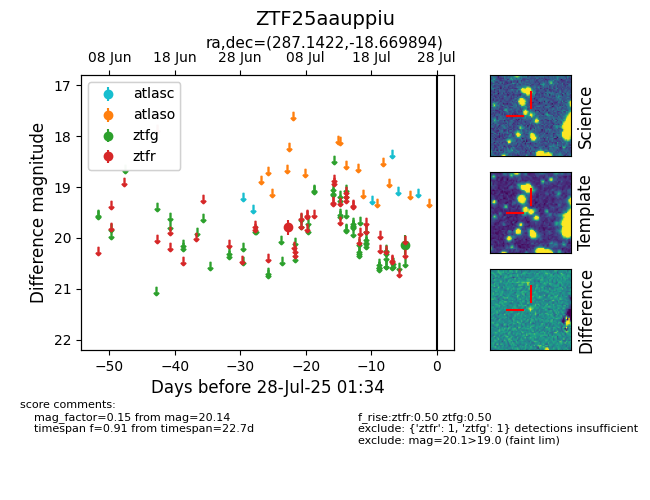

Target ZTF25aauppiu at 2025-07-28 01:34, see:
FINK: fink-portal.org/ZTF25aauppiu
Lasair: lasair-ztf.lsst.ac.uk/objects/ZTF25aauppiu
ALeRCE: alerce.online/object/ZTF25aauppiu
alt names
ZTF25aauppiu (ztf,fink)
coordinates:
equatorial (ra, dec) = (287.1422,-18.66989)
galactic (l, b) = (17.9603,-12.05979)
photometry
last ztfg=20.14, ztfr=19.79
1 ztfg, 1 ztfr detections
